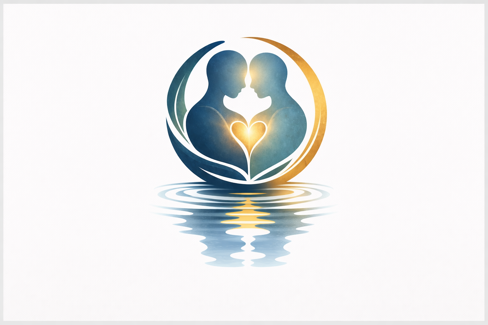

Our Approach
A framework built on presence, not prescription.
Centered on the whole person
Our approach begins with a simple conviction: every person navigating memory loss is still fully themselves. The diagnosis may change what they remember, but it does not change who they are. We build everything we do around this belief — creating tools, practices, and support systems that honor identity rather than focusing solely on what has been lost.
This is not a clinical model. It is a human one. We listen before we act. We center the individual and their family. We meet people where they are, with warmth and without judgment, and we walk alongside them for as long as they need us. Our work is dignified, intentional, and deeply personal — because that is what every person deserves.
Three principles that guide our work
Listen First
Every engagement begins with listening. We take time to understand the individual’s history, personality, preferences, and needs. We talk with families. We learn what brings comfort, what sparks joy, and what matters most. Only then do we begin to build.
Hold With Care
We create tools and practices that preserve identity over time — memory books, personal reflections, family guides, and connection rituals. These resources are designed to be warm, accessible, and deeply personal, so that the essence of a person is never lost.
Stay Present
Our support does not end after the first conversation. We provide ongoing resources, community connection, and guidance for families and caregivers. Staying present means showing up again and again — because this journey is not a single moment, but a continuing relationship.

You are not alone in this
Caring for someone with memory loss is one of the most profound acts of love there is — and one of the most difficult. Our approach recognizes that families and caregivers need support too. We provide resources designed to ease the emotional weight of caregiving, strengthen family bonds, and help you feel confident in the care you are giving.
Whether you are a spouse, a child, a friend, or a professional caregiver, we are here for you. Our guides, community programs, and support networks are built to meet you where you are — with empathy, practical wisdom, and the assurance that what you are doing matters deeply.
— The Still Me ProjectCare is not about fixing. It’s about honoring.
Walk This Path With Us
Our approach is built on the belief that every person matters. Your support helps us bring this framework to more families and communities.
Support the Work